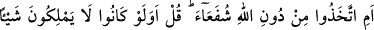
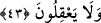

olduğuna göre nasıl olur da mü’min onu kerih görür/sevmez?! Bir hadîste şöyle
buyrulmuştur: “Hiçbiriniz ölmeden asla Rabbini göremez.”
Kul varlıktan tamamen geçmedikten, ölmedikten sonra
Hak Teâlâ’yı göremez vesselâm
Ölmeden evvel ölmek güvendir ey genç.
Hz. Mustafa böyle buyurmuştur.
Kulun ölümü kerih görmesinin sebebi, kendisine ölümden sonra hâsıl olacak Allah’a
kavuşma lezzetini idrak edememesidir.
“Ben de onun sevmediği şeyi sevmem.” Yâni ölümün zorluğu ve sıkıntıları gibi
kuluma ârız olacak şeylerle ona eziyet etmekten hoşlanmam. “Kulum için ise ölüm
zarûrîdir.” Çünkü ölüm, her nefis için takdir olunmuştur.
Bazıları demiştir ki: Her ne kadar Allah Teâlâ kulun ruhunu kabzetmekten hoşlanmasa
da, vakit geldiğinde kuluna olan muhabbetinin ziyadeliğinden, ruhun yüzünün örtüsü
mesabesinde olan cisim hicabını kaldırır.
Hicap, canın çehresi ve tenimin tozudur
Ne güzel an bu çehre üzerinden perdeyi attığım an
Şu halde akıllı kimseye düşen, kalb huzurunu ve gönül safâsını elde ederek ölüme
hazırlanmaktır. Çünkü hâl ve kâl/söz sâhiplerinin çoğu, ebedî yolculuğa çıkarken
sendelemişlerdir.
Mesnevî’de der ki:
O ince sanatlar, sözler ve konuşmalar Firavun topluluğudur.
Ecel Nil suyu gibidir.
Büyücülerin büyüsü say hepsini.
Ejderhâya dönüşen değnek bil ölümü.
Büyülerin tümünü bir lokmada yutuverdi.
Geceyle dolu dünyaydı, onu sabah yedi.
Ateş İbrahim’e diş geçirmedi; Hakk’ın seçkinini nasıl ısırır?
Ecel rüzgârı âriflere Yusufların rüzgârı gibi yumuşak ve tatlıdır.
43. Yoksa onlar Allah’tan başkasını şefâatçiler mi edindiler? De ki: Onlar hiçbir